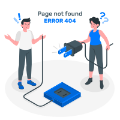

404 Alt
Page not found
It's looking like you may have taken a wrong turn. Don't worry... it happens to the best of us.
Back to HomeIt's looking like you may have taken a wrong turn. Don't worry... it happens to the best of us.
Back to Home